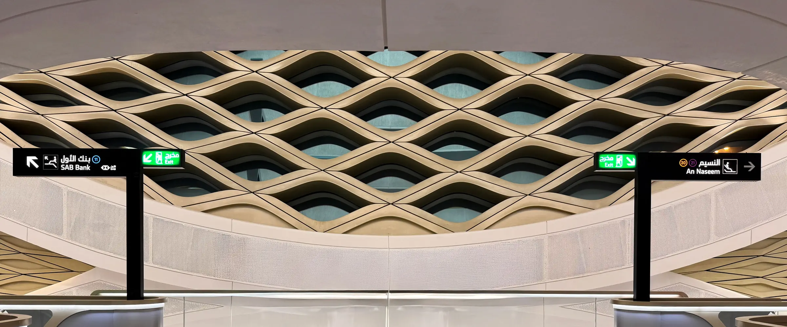

الممارسة 04
ينقل الشريك المؤسِّس المؤسسي المشروعَ من التحقق إلى الجاهزية للتمويل، ويتقاسم معه المخاطر عبر حصة في الملكية.
باختصار
تبني هيكلة المشاريع بصفتها شريكًا مؤسِّسًا مؤسسيًا؛ فنتحقق من الفكرة، ونؤسس الشركة ونستخرج موافقاتها، ونبني المنصة مع شركائنا، ونُعدّ خطة الدخول إلى السوق، ونجهّز الشركة للمستثمرين. ويأتي جزء من عائدنا في صورة حصة تُستحق كلما اجتاز المشروع مراحل متفقًا عليها. ويخدم هذا المجال المؤسسين والمستثمرين الأفراد والشركات الدولية التي تبني أعمالها في المملكة. ويُحصي جرد الأرشيف 108 مشاريع وشركات ناشئة ومنصات، ومن مشاريع هيكلة نفسها Arsann (بِيعت في 2023)، وAS3A (قيد التشغيل)، وAGTI. (الزراعة الدقيقة بالذكاء الاصطناعي).
ما نقدّمه
التحقق: أبحاث السوق، ودراسة الجدوى، والفرز عبر مصفوفة HOAM.
تأسيس الشركة وتجهيزها: السجل التجاري، والموافقات القطاعية، وتخطيط التوطين.
بناء المنصة والتقنية داخليًا ومع الشركاء.
الدخول إلى السوق: التسعير، ودليل المبيعات، واتفاقيات العملاء الأولى.
الجاهزية للتمويل: نموذج القوائم المالية الثلاث، والتقييم، وتقرير الفحص النافي للجهالة، وحزمة المستثمرين، وغرفة البيانات.
الحوكمة: اتفاقيات الشركاء، ومجالس الإدارة، ومتابعة الشروط المسبقة.
شروط «الحصة مقابل البناء»، مع استحقاق حصة الشريك عند بلوغ مراحل محددة.
كيف نصنع القيمة
-
 01
01الابتكار
نصمّم المشاريع الجديدة بصفتنا شريكًا مؤسِّسًا مؤسسيًا: الشركة، والمنصة التي نبنيها داخليًا ومع الشركاء، وشروط «الحصة مقابل البناء» التي تُستحق عند مراحل متفق عليها.
-
 06
06التسويق التجاري
ننقل المشروع من التحقق إلى الدخول إلى السوق ثم الجاهزية للتمويل، كما في Arsann، شركة تشغيل المواقف التي أسسها مؤسس هيكلة وبناها ثم باعها في 2023.

كيف نعمل
-
01
الفرز
تقارن مصفوفة HOAM الفرصة بسوابق عقدين من الزمن قبل إنفاق الوقت أو رأس المال.
-
02
التحقق
تختبر أبحاث السوق ودراسة الجدوى والنموذج المالي الطلبَ والجدوى الاقتصادية.
-
03
التأسيس وتحديد المراحل
تُؤسَّس الشركة ويُربط استحقاق الحصص بمراحل محددة، مثل 20% عند التسجيل، و30% عند أول عقد إيرادات، و50% عند بلوغ مؤشر أداء متفق عليه.
-
04
البناء والإطلاق
المنصة والفريق والعملاء الأوائل، مع لوحات متابعة تعمل من اليوم الأول.
-
05
التمويل أو التوسع أو التخارج
يُتفق على معايير الإيقاف منذ البداية، فتنتهي كل مرحلة بقرار واضح.
شواهد من سجلّنا
| السنة | المهمة | دور هيكلة | الحالة |
|---|---|---|---|
| 2010–2023 | الاستشارة ← البناء ← التخارج: قادت دراسة جدوى لمواقف السيارات عام 2010 إلى Arsann، وهي شركة تشغيل مواقف أسسها مؤسس هيكلة وبناها ثم باعها | مستشار، ثم مالك مؤسس وبائع | بِيعت لمجموعة استثمارية سعودية في 2023، ومسجّلة في ملفات هيكلةالدليل (أ): موقّع أو نتيجة موثّقة في الملفات |
| من 2019 حتى الآن | AS3A، منصة تربط الباحثين السعوديين عن العمل المرن والجزئي بأصحاب العمل | مؤسس وباني ومستشار استراتيجي: الفحص النافي للجهالة، والتقييم، ونموذج القوائم المالية الثلاث، ودليل المبيعات | قيد التشغيل، واتفاقيات العملاء موقّعةالدليل (أ) |
| 2026 | منصة سعودية ألمانية للتوطين: تدخل الشركات الألمانية المملكة عبر كيانات سعودية تشارك هيكلة في تأسيسها مع شريك ألماني متخصص في التوطين، مع مجمّع حصص للشركاء بنسبة 25% من كل كيان يُستحق بنسب 20/30/50 | شريك مؤسس في كل كيان سعودي | مسودة نهائية، ولم يُسجَّل التوقيع بعدالدليل (ب): مخرجات عمل في الملفات |
| 2025–2026 | فرز 14 صفقة في التقنية المالية والصناديق عبر مصفوفة HOAM لمنصة صناديق في التقنية المالية | تقييم الفرص | قيد الاستخدامالدليل (ب) |
أعداد المشاريع مستخرجة من جرد الأرشيف، وهي استرشادية. لا تُنشر أرقام نمو المشاريع قبل تدقيقها. لا نذكر أسماء العملاء والشركاء قبل موافقتهم.
الهياكل التي نستخدمها
أسئلة شائعة
ما الشريك المؤسِّس المؤسسي؟
جهة تنضم إلى المشروع شريكًا مؤسِّسًا، فتقدّم الهيكلة والحوكمة والجاهزية للتمويل وشبكة العلاقات، وتحصل على جزء من عائدها حصةً في الملكية بدلًا من الاكتفاء بالأتعاب.
كيف يعمل نموذج «الحصة مقابل البناء»؟
تُستحق حصة الشريك المؤسس على مراحل مرتبطة بإنجازات محددة، مثل التسجيل وأول عقد إيرادات وبلوغ مؤشر أداء متفق عليه. ولا تُستحق الحصة المرتبطة بإنجاز لم يتحقق.
ما مصفوفة HOAM؟
مصفوفة هيكلة لتقييم الفرص، تقيّم الفرصة الجديدة على ستة محاور وتقارنها بسوابق عقدين من الزمن. وهي أداة فرز، وليست استشارة استثمارية.
هل أوصلت هيكلة أحد مشاريعها إلى التخارج؟
نعم. نشأت Arsann من دراسة لمواقف السيارات عام 2010، ثم أصبحت شركة تشغيل بِيعت لمجموعة استثمارية سعودية في 2023.
هل يمكن لشركة أجنبية أن تبني مشروعًا في المملكة مع هيكلة؟
نعم. في هيكل التوطين تشارك هيكلة في تأسيس الكيان السعودي، وتُستحق حصتها مع تسجيل الكيان، وفوزه بأول عقد، وبلوغه مؤشرات الأداء المتفق عليها.
أخبرنا بالفكرة أو الخطة أو الشركة التي بدأتها. ويمكن أن نبدأ باتفاقية عدم إفصاح.